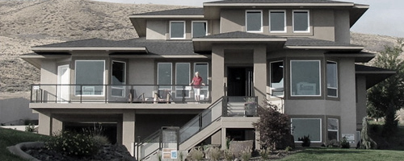

Your Technology Partner
JMK Tech is passionate about helping all users take control of technology that dominates their everyday lives: from the computer you use to access the internet, to the cell phone that you carry to stay in touch with important contacts, and everything else. JMK Tech is enthusiastic about making technology useable to all who would like to use it, especially those who are a little too intimidated by all of the options available.
Services
Consultations
Learn How We Can Help
JMK Tech has been helping clients take control of their technology. When tech overwhelms you, won’t cooperate, and makes you want to throw it through a window, JMK Tech can help! We will work beside you to regain control of your technology - we will even provide training to increase your understanding of the technology, preventing future issues in the process. You should feel confident using your technology - we just provide a little help when things get out of hand!

Support
When You Need It
JMK Tech is your partner in today’s techno-centric world. With the enormous variety of technology available to all user levels, JMK Tech stays up-to-date with offerings and features in order to have a full understanding of which forms of technology can help make your life easier. Call us today to set up an appointment to discuss what technology can do for you!
Smart Homes
Manage Your Home With Technology
Bring technology into your home to control HVAC, lighting, energy management, security and more, to make your life easier and more affordable. Energy prices are skyrocketing and the drive to become energy-efficient dominates our world. JMK Tech has the solutions to help you understand how technology can help you take control of your home and cut out some of the wasted energy. We have a range of packages, from simple starter management packages, to whole home controls and more. We would love to meet with you to discuss what JMK Tech can do for you!

About Us
Justin
CEO
Skills, interests, passions, stuff and things and stuff and things and stuff and things and stuff and things. But more stuff and things and stuff and things and stuff and things.
Shelby
Title
Skills, interests, passions, stuff and things and stuff and things and stuff and things and stuff and things.
Cory
Elite Tech
Skills, interests, passions, stuff and things and stuff and things and stuff and things and stuff and things.
Smart Home Technology
How Can Smart Home Technology Improve Your Life?
More and more people are turning to smart technology, and JMK Tech is on the cutting edge of these exciting new developments. From the phone and tablet you carry in your pocket to controlling your home’s heating and air conditioning while away on vacation, smart technology is everywhere. If you have been trying to figure out what smart home technology is and how you can take advantage of it, here are 10 simple ways to enjoy the innovation in your home. Whether you are looking to save energy, time, and money or you just want to become more efficient in your home’s day-to-day operations, these ideas may transform your home and lifestyle forever.
- Smart Technology at Home:
- Smart technology is a way of connecting your home through innovative technology to control and give you access to various systems throughout your home, including video, data, telephone, wireless, security, climate, lighting, and other home lifestyle factors that affect you and your family’s daily life. Smart home technology can help your home run more efficiently while also helping family members live in total comfort.
- Innovative Technology in Your Kitchen:
- Your kitchen has always been the hub of cooking, entertaining, spending time with family, and more. You will be surprised how smart technology pairs with your favorite appliances, faucets, and cooktop surfaces – all of these can be controlled through smart technology. Many homes have their smart tablet or keypad built into the wall in the kitchen to have access of other parts of the home. Many homeowners prefer the on-screen directions of their refrigerator to access the internet, play music, or watch their favorite television program – right on the screen of their refrigerator.
- Energy-Saving and Safety-Enhancing Technology for the Kitchen:
- It’s a common misconception that smart technology is only for people who want to have a remote control to everything. However, many smart home technologies actually help keep your family safe while saving you water and energy in the kitchen. Induction cooktops are one of these examples that produce heat that only heats the cookware when the metal comes in contact with the induction cooktop surface. This means a safer kitchen to work in, and less heat being generated for comfort while cooking.
- Smart Home Convenience Everywhere:
- While the kitchen is one room that definitely benefits from smart technology, all homeowners should assess their lifestyle to see what amenities would best fit their home and family. If you’d like to control music, lighting, visual entertainment, or temperature or security systems through your home, you can hire total smart home consultants such as JMK Technology Services who can walk you through the benefits of different configurations and assess what smart home functions will work best for you.
- Smart Bathrooms:
- All homeowners love total comfort and relaxation in their bathrooms. Smart home technology is the perfect way to be able to not only control your bathing experience while lounging in the tub, but you can also control your shower’s temperature, spray, steam, audio, and lighting of your shower, all at the touch of a button. If you share your bathroom, why not program each user’s favorite settings and have your favorite music cued through sound tile speakers? That’s what smart home technology can offer.
- Water Savings:
- While enjoying your bathroom nice, enjoying the savings on your monthly water bill even better. One example of water-saving technology is a Delta Brizo brand faucet, which offer shower heads that sculpt the water into a unique wave pattern, creating the feeling of more water without using more water. Other faucets can turn on and off automatically by motion, and the temperature of the water can be seen by a color LED light indicator before putting your hands under the water. These smart technologies ensure a better and safer user experience and less water wasted, all at once.
- Cooling and Heating Your Home With Smart Technology:
- Your home can use a lot of energy for cooling and heating to keep your family comfortable in all seasons and climates. In order to do this without costing a fortune for fluctuations of outdoor air temperatures, your home can have smart technology that helps you control and monitor your energy usage with thermostats such as the Nest learning thermostat. It “learns” your family’s lifestyle and connects to Wi-Fi, which enables homeowners to control settings from any internet enabled smart device.
- Temperature Control Through Architecture and Design:
- Other creative ideas for helping homeowners with heating and cooling doesn’t involve innovative electronics but rather placement of windows and doors and the position of your home, which can help take advantage of nature’s seasons and temperature changes. A passive house is designed to maximize its ability to heat itself in winter and cool itself in summer. This is designed by careful consideration of a home’s site and how the sun moves across the sky, where the trees and other vegetation are located, where the winter winds come from, etc.
- Smart Innovations for the Future:
- Many smart home ideas are out in the commercial world but haven’t been adapted for residential use yet; however, the reality isn’t far into the future. Coffee tables that enable you to control your home, surf the internet, and entertain your guests are already being used in hotels, casinos, and hospitality industries. Samsung has the SUR40 Microsoft PixelSense that isn’t available to consumers yet but enables guests to watch television, control smart appliances, and more. The possibilities are enormous for how many different areas of your home smart technology will be able to touch in upcoming years.
- Total Home Automation:
- While smart technologies are used for saving energy, water and adding safety, there is another factor that homeowners love: automation. Similar to the science fiction movies that we all fell in love with years ago, today many of those futuristic amenities have come to life. From automating your interior shades and exterior awnings from your bedroom to controlling your pool temperature, lighting and music before your guests arrive, the possibilities are mind-blowing. In this new era, smart home technology is fast and ever-changing. Contact JMK Technology Services today to find out how we can implement smart home technology to improve your life!